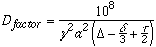
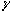
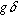
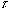
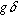
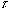

The possibility in Gifa to handle DOSY spectra and Laplace transform has needed the implementation of additional data representations as well as a set of additionnal commands.
The
fit techniques, consists simply in using the FITGENE command, which is
able to fit the data held in the 1D buffer, to one or two damped
exponentials.
The two macros, dosyfit and dosyfit_2 realizes this fit. Note
that these macros realizes this fit in such a way that the result is
independent on the DMIN DMAX parameters. The noise level
however, should be determine with care.
Direct space data-sets can be handled in memory in two representations : as a regular sampling of the direct space, or as a tabulated data-set, i.e. data-points measured at arbitrary locations of the direct space.
When regularly sampled, the direct space is assimilated to a time space. So seconds are the natural unit, and the spacing of points in the buffer is determined by the spectral width (SPECW).
When using tabulated data-sets (sampled at arbitrary locations), the location of the sampled points are stored in a special buffer 'TAB' designed for this purpose. The tab_buffer macro :
Values
in the reciprocal space (damping amplitudes) are always stored in a geometrical
series, the slower decay on the left, the faster on the right. The smallest
value (lower index) is given with the context DMIN, and the largest
with DMAX (DMIN and DMAX values are stored, in the
data file header, as DMIN/DFACTOR and
DMAX/DFACTOR). This decribes the values as they will be used
in the Laplace transform, along with the direct space values. However, one
might want to correlate the reciprocal space values to a physical constant
(such as diffusion for instance), for this purpose, a calibrating factor is
added which is multiplied to the actual value when computing the coordinate :
DFACTOR. The macro calib has been adapted to permit DFACTOR
calibration from a known signal, on the other hand, the macro
calibdosy tries to set DFACTOR from the experimental parameters
of the DOSY experiment itself (Wu, D.H., Chen, A.D. and Johnson, C.S. (1995)
J. Magn. Reson. Ser. A, 115, 260-264).

eq[3]
were
,
 and
are respectively the gyromagnetic ratio of the observed nucleus, the length of
the gradient pulse and the duration of the diffusion delay. a is the gradient
area and is equal to

(g : intensity in G/cm of a nominal gradient of 1.0) for square gradients.

is the inter-pulse delai in the bipolar-pulse LED sequence and is equal to 0 in
the LED sequence
and
are respectively the gyromagnetic ratio of the observed nucleus, the length of
the gradient pulse and the duration of the diffusion delay. a is the gradient
area and is equal to

(g : intensity in G/cm of a nominal gradient of 1.0) for square gradients.

is the inter-pulse delai in the bipolar-pulse LED sequence and is equal to 0 in
the LED sequence
The dosy_setup macro creates an interactive environment which permits to set
most of the pertinent parameters more easily.
These two commands perform the direct Laplace transform from a reciprocal space distribution, to either a regularly sampled direct space data-set (LAPLACE) or to a tabulated one (TLAPLACE). Both commands prompt for the final data-set size, which is completely independent of the starting size. Sizes do not have to be powers of 2.
These
commands actually implements the Maximum Entropy Laplace inversion.
INVLAP and INVTLAP starts the inversion. They both prompt for
the final size, and should be issued with the direct-space data-set (damped
data) in the current 1D buffer. They will start for ITER number of
iterations. Information on the process will be issued every NDISP
iterations, if display is enabled, the progress of the process is also
displayed on screen. INVLAP is for regularly sampled data-sets,
whereas INVTLAP is for tabulated data-sets.
When the number of iterations is reached, it is possible to increase the
ITER context, and the INVLAPCONT and INVTLAPCONT
commands permit to continue the process, restarting from the current state.
In the Maximum Entropy theory, the transpose of the Laplace transform appears in the computation of the derivative. These commands implements this transform, they may be needed in certain cases.
These
two realise the Laplace inversion of the actual DOSY experiments.
dosy2d is for the processing of a 2D DOSY experiment : a set of 1D
spectra, weighted by the diffusion coefficients; dosy3d is for a 3D
DOSY : a set of 2D spectra weighted by the diffusion coefficients.
Both macros require 5 parameters : nature of the data-set (regular or
tabulated); the processing to do; the final size, a noise threshold which
permits to determine which slices will be processed; and finally the name of
the output file.
For the processing you can choose to use MaxEnt, fit or fit with 2 components.
The fit technique extract a parameter rather than a diffusion profile, in this
case, the profile is reconstructed from the fitted parameters, using a FT
algorithm. The error on the position is used to reconstruct the width of the
line in reconstructed profile. Note however that this width is usually rather
optimistic as based solely on the noise level, and not on the other artefacts
that may appear in the data. The noise threshold is used to determine wich
column to process by considering the initial spectrum of the data-set, the
diffusion dimension is processed only if the related point in this initial
data-set is higher than the noise level time the threshold.
dosy3d also asks for a input file-name (initial 3D dataset, in memory)
and a output file-name, in order to create a file in which the result will be
stored (in memory).